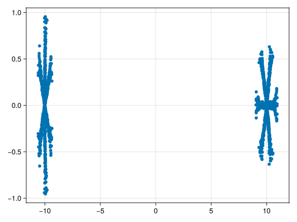
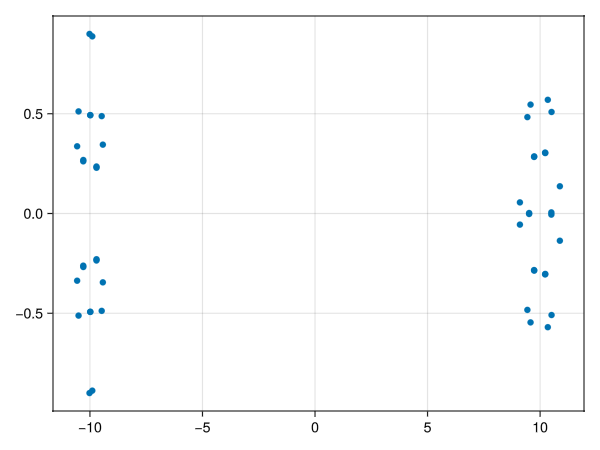

Field line tracing
using CoilFields, GLMakie;
coilset = readcoilset("../../../test/coilset", skipstart=3);Poincare section create currently only works on a single slice, multiple slices is too be implemented.
Randomly generate initial points within an $r_0$ ball of $X_0$
X₀ = [10.0, 0.0, 0.0]
r₀ = 1.0
pdata = construct_poincare(coilset, X₀, r₀, N_traj=100, event=true)
scatter(Point2f.(first.(pdata.points), last.(pdata.points)))
Otherwise we can choose the initial points explicitly
X₁ = [[10.5, 0.0, 0.0], [10.9, 0.0, 0.0]]
pdata = construct_poincare(coilset, X₁, event=true)CoilFields.PoincarePlane{Float64}([[-10.297154967815208, 2.3705440082707586e-15, -0.26142941102544764], [10.229749002683217, -1.0854811294324495e-14, -0.3028782363585458], [-9.987569843333779, 4.398219849193539e-15, -0.49319262298596495], [9.73851737881637, -1.1169562468300788e-14, -0.2862599487602959], [-9.710053870424556, 3.870678837037258e-15, -0.2355002335613193], [9.51252328086362, -1.5035401190425544e-14, -0.002458289147151003], [-9.707748519865113, 2.9077739190691363e-14, 0.22920119014917967], [9.732401594568897, -2.0224794450077877e-14, 0.2835133401219328], [-9.982377782851628, 1.2417476621098016e-14, 0.4926486622935109], [10.222767517936486, -5.355442397512199e-14, 0.30526631662228765] … [-9.895180354140646, -3.935165500955847e-15, 0.8878374081848508], [9.434834861536121, 5.1277145398687665e-15, 0.48308333038786094], [-9.426487167365412, -1.2283541309537039e-14, 0.34510137855834794], [9.103118073922735, 2.2324093498332308e-14, -0.05567135667211666], [-9.477403679566903, -8.812799695593226e-15, -0.48798878898450776], [9.575619326418758, 8.956053188694643e-15, -0.5458433972623342], [-10.018243926197458, -5.087924090303558e-14, -0.8999093970605954], [10.508455557870079, 2.2726623269698026e-14, -0.5088852766519212], [-10.568602653886611, -4.388547218127478e-14, -0.33684911492175384], [10.877882037601369, 4.773016736645257e-14, 0.1364576226887072]], 0.0)2D poincare
scatter(Point2f.(first.(pdata.points), last.(pdata.points)))
This page was generated using Literate.jl.